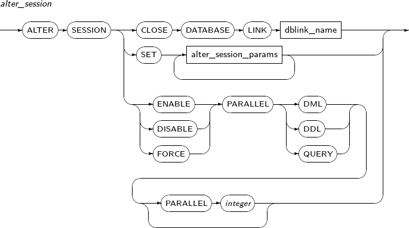
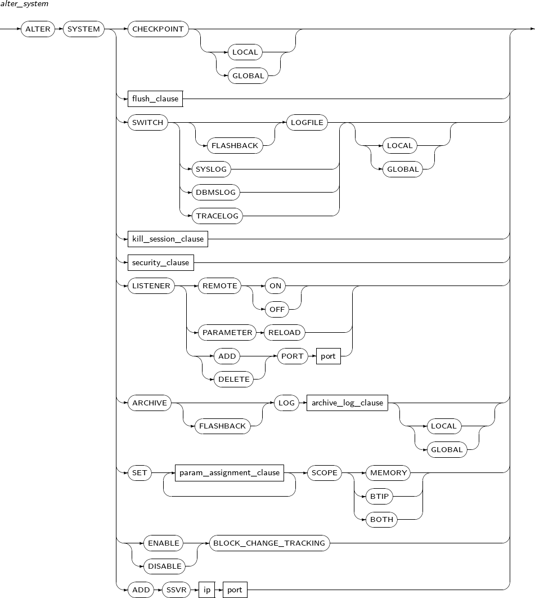
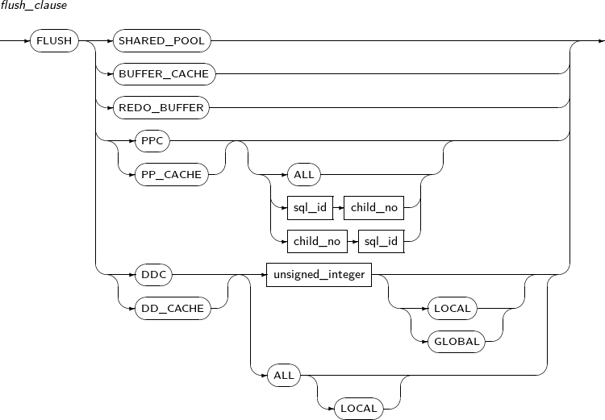
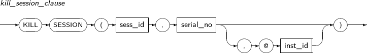
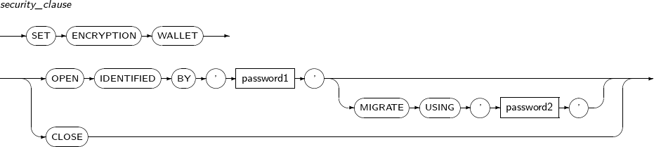

내용 목차
본 장에서는 트랜잭션 및 세션 관리를 위한 명령어를 자세히 설명한다. 트랜잭션 및 세션 관리를 위한 명령어는 알파벳 순으로 나열하고, 각 명령어에 대한 설명과 문법, 예제를 기술한다. 문법을 설명할 때는 “제3장 SQL 연산”의 형식을 그대로 따르고, 키워드와 문법의 구성요소는 별도의 표로 설명한다.
실행자가 가지고 있는 세션 환경을 조정한다. ALTER SESSION으로 변경된 초기화 환경 변수나 세션 환경 변수는 실행자의 접속이 끊어질 때까지 유효하다.
현재 세션뿐만 아니라 전체 시스템의 환경을 조정하려면 “9.2. ALTER SYSTEM”의 내용을 참고한다.
ALTER SESSION의 세부 내용은 다음과 같다.
문법
|  |
특권
아무런 특권을 요구하지 않는다.
구성요소
alter_session
| 구성요소 | 설명 |
|---|---|
| CLOSE DATABASE LINK | 지정한 데이터베이스 링크의 연결을 닫는다. 데이터베이스 링크를 열어 놓음으로써 발생하는 네트워크 리소스의 낭비를 줄이고 싶을 때 사용한다. CLOSE DATABASE LINK를 사용해 명시적으로 연결을 닫지 않으면 세션이 끊어질 때까지 연결이 열려 있다. |
| dblink_name | 데이터베이스 링크의 이름을 명시한다. |
| SET alter_session_params | 초기화 환경 변수나 세션 환경 변수의 값을 바꾸기 위해 사용한다. 변경한 값은 세션이 유지되는 동안 유효하다. |
alter_session_params
| 구성요소 | 설명 |
|---|---|
| CURRENT_SCHEMA | 현재 세션의 스키마를 변경한다. 변경 이후 스키마가 지정되지 않은 객체는 변경한 스키마부터 찾아보게 된다. 세션의 스키마가 변경되었다고 해서 세션 사용자가 변경되는 것은 아니다. 즉, 객체를 찾는 데에는 스키마가 사용되지만 그 객체를 사용할 수 있는가를 검사할 때는 세션 사용자를 기준으로 한다. |
ISOLATION LEVEL ISOLATION_LEVEL | 현재 세션이 만드는 트랜잭션의 고립성 수준을 설정한다. 설정할 수 있는 고립성 수준은 다음과 같다.
|
| SERIALIZABLE | 세션에 참가하는 트랜잭션은 SQL-92에 명시된 직렬화된 트랜잭션 고립성 모드 (Serializable Transaction Isolation Mode)로 동작한다. 이 모드에서는 직렬화된 트랜잭션이 시작되고 난 후 어떤 로우를 갱신한 다른 트랜잭션이 커밋했을 때 그 로우를 직렬화된 트랜잭션이 DML 문을 사용해 변경하려고 하면 변경이 일어나지 않고 에러가 반환된다. |
| READ COMMITED | 이 모드에서는 어떤 트랜잭션이 로우를 변경하고 커밋하지 않았을 경우 그 로우에 현재 트랜잭션이 DML 문을 사용해 변경하려고 하면 그 로우에 설정된 잠금 때문에 대기하게 된다. |
| READ ONLY | 기본적으로 SERIALIZABLE 모드와 똑같이 동작하지만, 데이터를 변경하려고 하면 에러가 반환된다. |
| TIME_ZONE | 현재 세션의 시간대를 변경한다. '[+|-]hh:mi'은 시와 분으로 표현된 시간대 오프셋을 의미하며, -12:00~14:00까지의 값을 사용할 수 있다. LOCAL을 설정한 경우 처음 세션이 시작될 때의 시간대를 현재 세션의 시간대로 변경한다. 데이터베이스에서 지원하는 지역 이름을 알고 싶으면 VT_TIMEZONE_NAMES 테이블의 TZNAME 컬럼을 조회하면 된다. |
| param_assignment_clause | 세션 초기화 파라미터를 설정한다. VT_PARAMETER 테이블 또는 VT_PARAMETER 동의어에서 파라미터를 확인할 수 있다. 이중 Dynamic, SESSION 클래스를 가지고 있는 초기화 파라미터만 ALTER SESSION을 사용하여 변경할 수 있다. Dynamic은 서버가 활성화된 상태에서 변경이 가능하다. 참고로 Static은 $TB_SID.tip 파일에 내용을 설정하기 때문에 서버를 재기동해야만 적용된다. SESSION은 세션별로 변경이 가능하다. SYSTEM은 세션별로 설정할 수 없고, 데이터베이스 전체에서 함께 사용하는 파라미터를 의미한다. |
param_assignment_clause
| 구성요소 | 설명 |
|---|---|
| param_name | 세션 초기화 파라미터의 이름을 명시한다. |
| param_value | 세션 초기화 파라미터의 값을 명시한다. |
예제
다음은 ALTER SESSION을 사용해 세션 환경을 변경하는 예이다.
ALTER SESSION CLOSE DATABASE LINK remote;
ALTER SESSION SET CURRENT_SCHEMA = tibero;
ALTER SESSION SET ISOLATION_LEVEL = SERIALIZABLE;
ALTER SESSION SET CURSOR_SHARING = EXACT;
체크포인트 작업을 수행하거나 진행 중인 세션을 중지하는 등의 시스템을 조작하거나, 초기화 파라미터를 동적으로 변경하는 등 시스템의 속성을 변경할 때 사용한다.
ALTER SYSTEM의 세부 내용은 다음과 같다.
문법
|  |
|  |
|  |
|  |
특권
ALTER SYSTEM 시스템 특권을 부여받아야 한다.
구성요소
alter_system
| 구성요소 | 설명 |
|---|---|
| CHECKPOINT | Tibero가 체크포인트 작업을 수행하도록 한다. 체크포인트 작업을 수행하면 버퍼 캐시의 모든 갱신된 디스크 블록이 디스크에 반영된다. 체크포인트는 트랜잭션의 커밋 여부와는 무관하다. 커밋되지 않은 트랜잭션이 변경한 디스크 블록도 디스크에 반영되며, 그렇다고 해도 다른 트랜잭션이 커밋되지 않은 블록을 볼 수는 없다. |
| CHECKPOINT LOCAL | Tibero TAC 환경에서 접속한 노드에 대한 체크포인트 작업을 수행하도록 한다. |
| CHECKPOINT GLOBAL | Tibero TAC 환경에서 전체 노드에 대한 체크포인트 작업을 수행하도록 한다. |
| FLUSH SHARED_POOL | 공유 풀(shared pool)의 내용을 모두 비운다. 공유 풀에는 데이터 딕셔너리(data dictionary) 정보 등이 들어가며, 현재 사용 중인 정보는 비우지 않는다. |
| FLUSH BUFFER_CACHE | 버퍼 캐시(buffer cache)의 더티 블록(dirty block)을 디스크에 기록한다. 이때 버퍼 캐시의 더티 블록을 디스크에 기록만 하고, 버퍼 캐시의 블록들을 무효화(invalidation)시키지는 않는다. |
| FLUSH REDO_BUFFER | Redo 로그를 강제로 flush한다. Redo 로그는 트랜잭션을 커밋하지 않더라도 주기적으로 flush되므로 따로 명령을 실행할 필요는 없으나, Redo 로그가 flush된 것을 명시적으로 나타내기 위해 명령을 실행할 수 있다. |
FLUSH PPC FLUSH PPC ALL FLUSH PP_CACHE FLUSH PP_CACHE ALL | PP 캐시에서 모든 physical plan 정보를 강제로 flush한다. |
FLUSH PPC sql_id child_no FLUSH PPC child_no sql_id FLUSH PP_CACHE sql_id child_no FLUSH PP_CACHE child_no sql_id | Physical plan의 sql id와 child number를 명시하면 PP 캐시에서 해당 physical plan 정보를 강제로 flush한다. |
| FLUSH DDC unsigned_integer | unsigned_integer에 스키마 객체 ID를 명시하면 DD 캐시에서 해당 스키마 객체 정보를 강제로 flush 한다. 시퀀스 정보는 flush하지 않는다. |
| FLUSH DDC unsigned_integer LOCAL | TAC 환경일 때 unsigned_integer에 스키마 객체 ID를 명시하면 접속한 노드의 DD 캐시에서 해당 스키마 객체 정보를 강제로 flush한다. 시퀀스 정보는 flush하지 않는다. |
| FLUSH DDC unsigned_integer GLOBAL | TAC 환경일 때 unsigned_integer에 스키마 객체 ID를 명시하면 전체 노드의 DD 캐시에서 해당 스키마 객체 정보를 강제로 flush한다. 시퀀스 정보는 flush하지 않는다. |
| FLUSH DDC ALL | DD 캐시에서 시퀀스를 제외한 모든 스키마 객체 정보를 강제로 flush 한다. |
| FLUSH DDC ALL LOCAL | TAC 환경일 때 접속한 노드의 DD 캐시에서 시퀀스를 제외한 모든 스키마 객체 정보를 강제로 flush한다. |
| FLUSH DD_CACHE unsigned_integer | FLUSH DDC unsigned_integer와 동일한 기능이다. |
| FLUSH DD_CACHE unsigned_integer LOCAL | FLUSH DDC unsigned_integer LOCAL과 동일한 기능이다. |
| FLUSH DD_CACHE unsigned_integer GLOBAL | FLUSH DDC unsigned_integer GLOBAL과 동일한 기능이다. |
| FLUSH DD_CACHE ALL | FLUSH DDC ALL과 동일한 기능이다. |
| FLUSH DD_CACHE ALL LOCAL | FLUSH DDC ALL LOCAL과 동일한 기능이다. |
| SWITCH LOGFILE | 로그 그룹을 교체한다. 로그 버퍼의 모든 내용이 현재의 로그 그룹으로 저장되고, 이후 생성되는 Redo 로그는 다음의 로그 그룹에 저장된다. 로그 파일에 대한 자세한 내용은 "Tibero 관리자 안내서"를 참고한다. |
| SWITCH LOGFILE LOCAL | TAC 환경에서 접속한 노드에 대해서만 Redo 로그 그룹을 교체한다. |
| SWITCH LOGFILE GLOBAL | TAC 환경에서 전체 노드에 대해 Redo 로그 그룹을 교체한다. |
| SWITCH FLASHBACK LOGFILE | Flashback 로그 그룹을 교체한다. Flashback 로그 버퍼의 모든 내용이 현재의 로그 그룹으로 저장되고, 이후 생성되는 Flashback 로그는 다음의 로그 그룹에 저장된다. Flashback 로그 파일에 대한 자세한 내용은 "Tibero 관리자 안내서"를 참고한다. |
| SWITCH FLASHBACK LOGFILE LOCAL | TAC 환경에서 접속한 노드에 대해서만 Flashback 로그 그룹을 교체한다. |
| SWITCH FLASHBACK LOGFILE GLOBAL | TAC 환경에서 전체 노드에 대해 Flashback 로그 그룹을 교체한다. |
| SWITCH SYSLOG | syslog 파일을 교체한다. 현재 사용 중인 syslog 파일을 백업하고 새로운 syslog 파일을 생성한다. |
| SWITCH SYSLOG LOCAL | TAC 환경에서 접속한 노드에 대해 syslog 파일을 백업하고 새로운 syslog 파일을 생성한다. |
| SWITCH SYSLOG GLOBAL | TAC 환경에서 전체 노드에 대해 syslog 파일을 백업하고 새로운 syslog 파일을 생성한다. |
| SWITCH DBMSLOG | dbmslog 파일을 교체한다. 현재 사용 중인 dbmslog 파일을 백업하고 새로운 dbmslog 파일을 생성한다. |
| SWITCH DBMSLOG LOCAL | TAC 환경에서 접속한 노드에 대해 dbmslog 파일을 백업하고 새로운 dbmslog 파일을 생성한다. |
| SWITCH DBMSLOG GLOBAL | TAC 환경에서 전체 노드에 대해 dbmslog 파일을 백업하고 새로운 dbmslog 파일을 생성한다. |
| SWITCH TRACELOG | tracelog 파일을 교체한다. 현재 사용 중인 tracelog 파일을 백업하고 새로운 tracelog 파일을 생성한다. |
| SWITCH TRACELOG LOCAL | TAC 환경에서 접속한 노드에 대해 tracelog 파일을 백업하고 새로운 tracelog 파일을 생성한다. |
| SWITCH TRACELOG GLOBAL | TAC 환경에서 전체 노드에 대해 tracelog 파일을 백업하고 새로운 tracelog 파일을 생성한다. |
| kill_session_clause | 세션을 중지시킨다. 트랜잭션 종료를 기다리지 않고, 마치 접속이 종료된 것처럼 처리한다. |
| security_clause | 컬럼 암호화 등의 보안 기능에 사용하는 보안 지갑(Wallet)을 열고 닫는다. |
| LISTENER REMOTE ON | 로컬 호스트가 아닌 외부 클라이언트의 네트워크 접속을 허용한다. |
| LISTENER REMOTE OFF | 로컬 호스트가 아닌 외부 클라이언트의 네트워크 접속을 차단한다. 단, 로컬 호스트의 tbdsn.tbr 파일에서 IP가 'localhost'라고 설정된 경우에만 해당한다. 그리고 이미 접속된 클라이언트의 접속은 유지된다. |
| LISTENER PARAMETER RELOAD | 서버 운영중에 LSNR_INVITED_IP 또는 LSNR_DENIED_IP의 설정을 변경한 경우 이를 적용한다. |
| LISTENER ADD PORT port | LISTENER_PORT 이외의 데이터베이스의 접속 포트 port를 추가한다. |
| LISTENER DELETE PORT port | LISTENER_PORT 이외의 추가된 데이터베이스의 접속 포트 port를 삭제한다. |
| ARCHIVE LOG archive_log_clause | Current가 아닌 모든 Redo 로그 그룹들에 대한 아카이브 로그를 생성한다. |
| ARCHIVE LOG archive_log_clause LOCAL | TAC 환경에서 접속한 노드에만 해당되는 Current가 아닌 모든 Redo 로그 그룹들에 대한 아카이브 로그를 생성한다. |
| ARCHIVE LOG archive_log_clause GLOBAL | TAC 환경에서 전체 노드에 해당되는 Current가 아닌 모든 Redo 로그 그룹들에 대한 아카이브 로그를 생성한다. |
| ARCHIVE FLASHBACK LOG archive_log_clause | Current가 아닌 모든 Flashback 로그 그룹들에 대한 아카이브 로그를 생성한다. |
| ARCHIVE FLASHBACK LOG archive_log_clause LOCAL | TAC 환경에서 접속한 노드에만 해당되는 Current가 아닌 모든 Flashback 로그 그룹들에 대한 아카이브 로그를 생성한다. |
| ARCHIVE FLASHBACK LOG archive_log_clause GLOBAL | TAC 환경에서 전체 노드에 해당되는 Current가 아닌 모든 Flashback 로그 그룹들에 대한 아카이브 로그를 생성한다. |
| SET param_assignment_clause | 시스템 초기화 파라미터를 설정한다. ALTER SESSION의 param_assignment_clause와 동일하지만, Dynamic, System 클래스를 가지고 있는 초기화 파라미터를 변경한다는 점이 다르다. |
| ENABLE BLOCK CHANGE TRACKING | Block Change Tracking 모드를 활성화한다. Block Change Tracking에 대한 자세한 내용은 "Tibero 관리자 안내서"를 참고한다. |
| DISABLE BLOCK CHANGE TRACKING | Block Change Tracking 모드를 비활성화한다. Block Change Tracking에 대한 자세한 내용은 "Tibero 관리자 안내서"를 참고한다. |
| ADD SSVR ip port | TAS 가동 중에 새로운 SSVR를 추가한다. 해당 ip 및 port에 맞는 SSVR가 추가되며 TAS 인스턴스에서 수행해야 한다. |
kill_session_clause
| 구성요소 | 설명 |
|---|---|
sess_id | 접속을 끊을 세션의 ID이다. VT_SESSION을 통해 확인할 수 있으며, 해당 세션이 없는 경우 에러가 발생한다. |
| serial_no | 접속을 끊을 세션의 일련번호이다. VT_SESSION을 통해 확인할 수 있으며, 해당 세션이 없는 경우 에러가 발생한다. |
| inst_id | 접속을 끊을 세션의 인스턴스의 ID이다. TAC 환경에서 다른 노드의 세션의 접속을 끊을 때에만 입력한다. GV$SESSION을 통해 확인할 수 있으며, TAC 환경이 아니거나 해당 인스턴스가 없는 경우 에러가 발생한다. |
security_clause
| 구성요소 | 설명 |
|---|---|
| OPEN IDENTIFIED BY 'password1' | 보안 지갑을 열 때 사용한다. password1에는 보안 지갑의 패스워드를 입력한다. 패스워드는 보안 지갑을 생성할 때 입력한 것과 같아야 하며, 보안 지갑은 $TB_HOME/bin 디렉터리에 있는 tbwallet_gen 프로그램을 이용하여 생성한다. |
OPEN IDENTIFIED BY 'password1' MIGRATE USING 'password2' | HSM 장비 사용 환경에서 보안 지갑을 열 때 사용한다. HSM 장비를 사용하는 경우 HSM 장비의 패스워드 password1과 보안 지갑의 패스워드 password2를 사용하여 보안 지갑을 열 수 있다. |
| CLOSE | 보안 지갑을 닫을 때 사용한다. |
archive_log_clause
| 구성요소 | 설명 |
|---|---|
| ALL | 아직 아카이브 되지 않은 Redo 로그를 모두 아카이브한다. 현재 사용 중인 Redo 로그는 대상에서 제외된다. 로그 파일과 아카이브에 대한 자세한 내용은 "Tibero 관리자 안내서"를 참고한다. |
예제
다음은 ALTER SYSTEM을 사용하여 시스템의 속성을 변경하는 예이다.
ALTER SYSTEM CHECKPOINT; ALTER SYSTEM SWITCH LOGFILE; ALTER SYSTEM KILL SESSION (1, 1); ALTER SYSTEM KILL SESSION (1, 1, @1); ALTER SYSTEM SET ENCRYPTION WALLET OPEN IDENTIFIED BY "password"; ALTER SYSTEM SET ENCRYPTION WALLET CLOSE; ALTER SYSTEM SET DBMS_LOG_DEST = '/tmp/log';
다음은 KILL SESSION을 사용했을 때 해당 세션이 없는 경우 에러가 발생하는 예이다.
SQL> ALTER SYSTEM KILL SESSION (1, 1); TBR-7204: Requested session may be closed already or not exist.
현재 트랜잭션을 종료하고 트랜잭션의 갱신된 내용을 데이터베이스에 반영한다. 동시에 모든 저장점을 삭제하고 로우에 설정된 잠금을 해제한다.
COMMIT의 세부 내용은 다음과 같다.
문법
구성요소
| 구성요소 | 설명 |
|---|---|
| WORK | SQL 표준과 호환성을 위해 허용된 문법이다. 생략해도 아무런 차이가 없다. |
| FORCE | 특정 트랜잭션을 강제로 커밋할 때 사용한다. |
| CORRUPT_XID | 트랜잭션 복구를 실패한 트랜잭션을 강제로 커밋한다. 트랜잭션 복구를 실패한 트랜잭션은 동적 뷰 V$CORRUPT_XID로 조회할 수 있다. 단, 강제로 커밋된 트랜잭션은 복구되지 않으므로 데이터 일관성이 보장되지 않는다. |
| CORRUPT_XID_ALL | 트랜잭션 복구를 실패한 경우 실패한 모든 트랜잭션을 강제로 커밋한다. 단, 강제로 커밋된 트랜잭션은 복구되지 않으므로 데이터 일관성이 보장되지 않는다. |
| tx_id_literal | XA에서 지연된 트랜잭션을 처리할 때 사용한다. DBA_2PC_PENDING 뷰의 LOCAL_TRAN_ID 컬럼에 해당하는 값을 입력한다. 작은따옴표(' ')를 사용하는 것을 유의한다. |
예제
다음은 COMMIT을 실행하는 예이다.
COMMIT;
COMMIT WORK;
COMMIT FORCE '2.16.18';
존재하지 않는 트랜잭션을 지정하면, 다음과 같은 에러가 발생한다.
SQL> COMMIT FORCE '2.16.18'; TBR-21022: No prepared transaction found with transaction id 2.16.18.
하나 이상의 테이블, 테이블 파티션, 테이블 서브파티션을 특정 모드로 잠근다. DML 수행 등으로 인한 자동 잠김보다 상위 모드로 적용되며, 작업 수행 중 다른 사용자의 테이블에 대한 접근을 금지하거나 허용할 수 있다. 잠긴 테이블은 트랜잭션을 커밋하거나 롤백할 때까지 풀리지 않는다. 테이블을 조회하는 작업은 테이블 잠금을 필요로하지 않으므로, 테이블을 잠그더라도 다른 사용자의 테이블 조회를 막지 않는다.
LOCK TABLE의 세부 내용은 다음과 같다.
문법
특권
사용자의 스키마에 있는 테이블을 잠그기 위해서는 별다른 특권이 필요하지 않다. 단, 다른 사용자의 스키마에 있는 테이블을 잠그기 위해서는 LOCK ANY TABLE 시스템 특권이 있어야 한다.
구성요소
lock_table
| 구성요소 | 설명 |
|---|---|
| schema | 잠글 테이블을 포함하고 있는 스키마의 이름이다. 생략하면 현재 사용자의 스키마로 인식된다. |
| table, view | 잠글 테이블 또는 뷰의 이름이다. |
| partition_ext_clause | 잠글 파티션 또는 서브파티션을 지정한다. |
| lockmode MODE | 잠글 모드를 설정한다. |
| NOWAIT | 다른 사용자가 먼저 테이블을 잠그고 있어서 테이블을 잠글 수 없는 경우 기다리지 않고 곧바로 실패하도록 설정한다. |
| WAIT integer | 다른 사용자가 먼저 테이블을 잠그고 있어서 테이블을 잠글 수 없는 경우 일정한 시간만큼 기다린다. 지정된 시간(초)이 초과하면 실패한다. |
partition_ext_clause
| 구성요소 | 설명 |
|---|---|
| partition | 잠글 테이블 파티션의 이름이다. |
| subpartition | 잠글 테이블 서브파티션의 이름이다. |
lockmode
| 구성요소 | 설명 |
|---|---|
| ROW SHARE | 테이블에 대한 동시 접근을 허용하지만 배타적 접근을 허용하지 않는다. |
| ROW EXCLUSIVE | ROW SHARE와 같지만 SHARE 모드로 잠그는 것도 허용하지 않는다. UPDATE, INSERT, DELETE를 수행할 때 자동으로 설정되는 모드이다. |
| SHARE | 동시 조회는 가능하지만 테이블 수정은 허용하지 않는다. |
| SHARE ROW EXCLUSIVE | 전체 테이블을 조회할 때 사용된다. 다른 사용자가 테이블을 조회하는 것은 허용하지만 SHARE 모드로 테이블을 잠그거나 테이블을 수정하는 것은 허용하지 않는다. |
| EXCLUSIVE | 테이블 조회는 가능하지만 테이블에 대한 다른 모든 동작은 허용하지 않는다. |
예제
다음은 LOCK TABLE을 사용해 테이블을 잠그는 예이다.
LOCK TABLE table_exmp IN EXCLUSIVE MODE NOWAIT; LOCK TABLE table_exmp PARTITION (part_exmp1) IN SHARE MODE WAIT 3;
현재 트랜잭션을 종료하고 트랜잭션에서 갱신된 내용을 모두 취소한다. 동시에, 모든 저장점을 삭제하고 로우에 설정된 잠금을 해제한다.
ROLLBACK의 세부 내용은 다음과 같다.
문법
구성요소
| 구성요소 | 설명 |
|---|---|
| WORK | SQL 표준과 호환성을 위해 허용된 문법이다. 생략해도 아무런 차이가 없다. |
| SAVEPOINT | 특정 저장점까지만 롤백을 하고자 할 때 사용한다. 지정되지 않은 저장점을 명시하면, 에러가 발생한다. 저장점의 이름은 대소문자를 구분하지 않는다. |
| savept_name | 저장점의 이름을 명시한다. |
| FORCE | 특정 트랜잭션을 강제로 롤백할 때 사용한다. |
| tx_id_literal | XA에서 지연된 트랜잭션을 처리할 때 사용한다. DBA_2PC_PENDING 뷰의 LOCAL_TRAN_ID 컬럼에 해당하는 값을 입력한다. 작은따옴표(' ')를 사용하는 것을 유의한다. |
예제
다음은 SAVEPOINT로 저장점을 지정하고, ROLLBACK을 사용해 지정된 저장점까지 롤백하는 예이다.
SQL> INSERT INTO T VALUES(1);
1 row inserted.
SQL> COMMIT;
Commit completed.
SQL> SELECT * FROM T;
A
---------
1
1 selected.
SQL> UPDATE T SET A=2;
1 updated.
SQL> SAVEPOINT SP1;
Savepoint created.
SQL> UPDATE T SET A=3;
1 updated.
SQL> SELECT * FROM T;
A
---------
3
1 selected.
SQL> ROLLBACK TO SAVEPOINT SP1;
Rollback succeeded.
SQL> SELECT * FROM T;
A
---------
2
1 selected.
SQL> ROLLBACK;
Rollback succeeded.
SQL> SELECT * FROM T;
A
---------
1
1 selected.
SQL> ROLLBACK TO SAVEPOINT SP1;
TBR-21008 : No such savepoint: 'SP1'
다음은 존재하지 않는 트랜잭션을 지정했을 때 발생하는 에러이다.
SQL> ROLLBACK FORCE '2.16.18'; TBR-21022: No prepared transaction found with transaction id 2.16.18.
현재 트랜잭션에 저장점을 설정한다. 부분 롤백을 수행하기 위해서는 반드시 저장점을 미리 설정해야 한다. 저장점 설정은 트랜잭션의 실행에 전혀 영향을 주지 않는다.
SAVEPOINT의 세부 내용은 다음과 같다.
문법
구성요소
| 구성요소 | 설명 |
|---|---|
| savept_name | 저장점의 이름은 현재 트랜잭션에서 유일해야 한다. 만약 같은 트랜잭션에서 이전에 설정한 저장점의 이름과 동일한 저장점을 설정하면, 이전의 저장점은 제거된다. 저장점의 이름은 대소문자를 구분하지 않는다. |
예제
다음은 SAVEPOINT를 사용해 저장점을 설정하는 예이다.
SAVEPOINT sp1;
사용자에게 할당된 역할을 활성화하거나 비활성화한다.
1. 역할을 생성, 변경, 제거하기 위해서는 “7.38. CREATE ROLE”, “7.11. ALTER ROLE”, “7.59. DROP ROLE”의 내용을 참고한다.
2. 역할에 특권을 부여하거나 회수하기 위해서는 “7.71. GRANT”, “7.75. REVOKE”의 내용을 참고한다.
SET ROLE의 세부 내용은 다음과 같다.
문법
특권
활성화 또는 비활성화하려는 역할은 해당 사용자에게 이미 사용이 허가된 역할이어야 한다.
구성요소
| 구성요소 | 설명 |
|---|---|
| role_name | 부여받은 역할 중에서 활성화하려는 역할을 나열한다. 이곳에 포함되지 않은 역할은 자동으로 비활성화된다. |
| IDENTIFIED BY | 패스워드가 설정된 경우에는 해당 역할을 사용하려고 할 때 해당 패스워드를 입력해야 한다. 역할에 패스워드를 설정하는 방법은 ALTER ROLE과 CREATE ROLE을 참고한다. |
| ALL | 부여받은 모든 역할을 사용할 수 있도록 설정한다. 단, 사용할 수 있는 역할 중에 패스워드가 설정된 역할이 있으면 해당 역할을 EXCEPT 절로 제외하지 않는 이상 ALL 절을 이용해 사용할 수 있게 설정할 수 없다. |
| EXCEPT | ALL 절을 사용해 부여받은 모든 역할을 사용할 수 있도록 설정하려고 할 때 설정에서 제외할 역할이 포함된다. 즉, EXCEPT 절에 나열한 역할을 제외하고는 다른 모든 역할을 사용할 수 있게 설정된다. |
예제
다음은 사용자에게 역할을 할당하고, 할당된 역할을 SET ROLE을 사용해 활성화하는 예이다.
SQL> CONN sys/tibero Connected. SQL> CREATE USER u1 IDENTIFIED BY xxx; -- u1 사용자를 생성한다. User created. SQL> GRANT CREATE SESSION TO u1; Granted. SQL> CREATE ROLE a; -- 역할을 생성한다. Role created. SQL> CREATE ROLE b; Role created. SQL> CREATE ROLE c; Role created. SQL> CREATE ROLE d IDENTIFIED BY aaa; --일부 역할은 패스워드를 사용한다. Role created. SQL> CREATE ROLE e IDENTIFIED BY bbb; Role created. SQL> GRANT a, b, c, d, e TO u1; -- U1 사용자에게 역할을 허가한다. Granted. SQL> CONN u1/xxx Connected. SQL> SET ROLE a, b, c; Set. SQL> SELECT * FROM session_roles; ROLE ------------------------------ A B C 3 rows selected. SQL> SET ROLE a, b, c, d; TBR-7181: need password to enable the role SQL> SET ROLE c, d IDENTIFIED BY aaa, e IDENTIFIED BY bbb; Set. SQL> SELECT * FROM session_roles; ROLE ------------------------------ C D E 3 rows selected
위의 예를 보면, 역할 A, B, C, D, E를 생성하는데, 그 중 역할 D와 역할 E는 패스워드를 설정하여 생성하였다. 패스워드가 설정되지 않은 역할 A, B, C는 아무런 제약 없이 사용할 수 있지만, 패스워드가 설정된 역할 D와 E는 IDENTIFIED BY 절을 사용하여 패스워드를 입력해야만 사용할 수 있다. 또한, 마지막 SET ROLE 문장을 보면 역할 A, B를 제외한 C, D, E만 사용할 수 있게 설정했으므로, 기존에 사용할 수 있게 설정되었던 역할 A, B가 사용할 수 없는 상태로 설정이 변경된 것을 볼 수 있다.
다음은 EXCEPT를 사용하는 예이다.
SQL> SET ROLE ALL; TBR-7181: need password to enable the role SQL> SET ROLE ALL EXCEPT d, e; Set. SQL> SELECT * FROM session_roles; ROLE ------------------------------ A B C 3 rows selected.
위의 예에서, 역할 D, E는 패스워드가 설정되어 있다. ALL 절에서는 패스워드를 입력할 방법이 없으므로, ALL 절을 이용해서는 역할 D, E를 사용할 수 있게 설정할 수 없다. 패스워드를 사용하는 역할을 EXCEPT 절을 이용하여 제외하면, 제외되고 남은 나머지 역할을 ALL 절을 이용하여 사용할 수 있게 설정할 수 있다.
현재 트랜잭션의 고립성 수준이나 이름을 설정한다. 이 명령어는 현재 트랜잭션에서 실행하는 최초의 문장이어야 한다.
SET TRANSACTION의 세부 내용은 다음과 같다.
문법
구성요소
| 구성요소 | 설명 |
|---|---|
ISOLATION LEVEL 또는 ISOLATION_LEVEL | ISOLATION LEVEL 문으로 트랜잭션의 고립성을 설정할 수 있다. 설정할 수 있는 고립성 수준은 다음과 같다.
|
| SERIALIZABLE | 세션에 참가하는 트랜잭션은 SQL-92에 명시된 직렬화된 트랜잭션 고립성 모드 (Serializable Transaction Isolation Mode)로 동작한다. 이 모드에서는, 직렬화된 트랜잭션이 시작되고 난 후 어떤 로우를 갱신한 다른 트랜잭션이 커밋했을 때 그 로우를 직렬화된 트랜잭션이 DML 문을 사용해 변경하려고 하면 변경이 일어나지 않고 에러가 반환된다. |
| READ COMMITED | 이 모드에서는 어떤 트랜잭션이 로우를 변경하고 커밋하지 않았을 경우 그 로우에 현재 트랜잭션이 DML 문을 사용해 변경하려고 하면 그 로우에 설정된 잠금 때문에 대기하게 된다. |
| READ ONLY | 기본적으로 SERIALIZABLE 모드와 똑같이 동작하지만, 데이터를 변경하려고 하면 에러가 반환된다. |
| NAME | NAME 문으로 트랜잭션의 이름을 설정할 수 있다. (기본값: NULL) 트랜잭션 이름은 V$TRANSACTION을 조회해 보면 알 수 있다. |
| transaction_name | 설정할 트랜잭션의 이름이다. |
예제
다음은 현재 트랜잭션을 READ COMMITTED로 설정한 후 동적 뷰 V$TRANSACTION을 조회하는 예이다.
SQL> SET TRANSACTION ISOLATION_LEVEL READ COMMITTED;
Set.
SQL> SELECT name, state FROM v$transaction;
NAME STATE
-------------------- ----------
3
1 row selected.
SQL> SET TRANSACTION NAME 'tx1';
TBR-7191 : Unable to execute SET TRANSACTION: transaction has already started.
위와 같이 SET TRANSACTION 문은 트랜잭션 최초의 문장이어야 하며, 그렇지 않은 경우 에러가 발생한다.
다음과 같이 트랜잭션의 이름을 설정할 수도 있다.
SQL> SELECT name, state FROM v$transaction; NAME STATE -------------------- ---------- 0 row selected. SQL> SET TRANSACTION NAME 'tx1'; Set. SQL> SELECT name, state FROM v$transaction; NAME STATE -------------------- ---------- tx1 3 1 row selected.